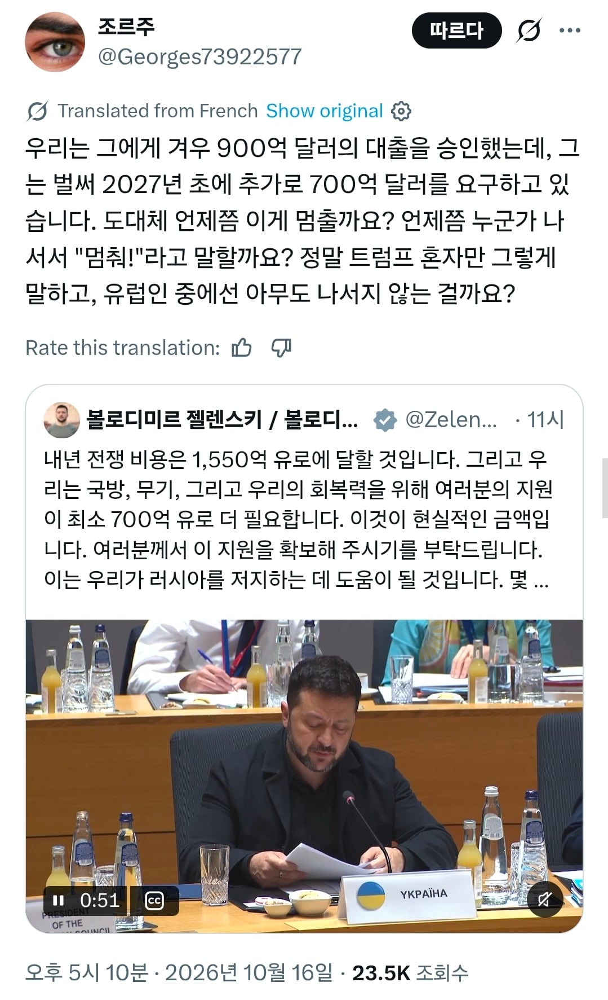

밑도 끝도 없이 돈 내놔하는 젤렌스키 때문에 인내심이 폭발한 유럽인들
댓글
부모나 형제도 간병 길어지면 인간 관계 파탄남. 그런데. 전쟁 이전에 쟤네가 유럽과 전세계에 뭐였는지 블루팀 무새들은 말을 못함. 망하기 일보 직전이라는데, 폴란드 앞에서 자국민 10만명 학살한 놈들 국가 영웅으로 추대한건 뭐라고 할건데. 바이든 때부터 완장 차고 지랄하던 새끼들 존나 많았는데. 아직도 가끔 깝치더만.
베트남보다 경제규모도 작고 더 부패한, 그리고 지원국들 대상으로 적반하장인 나라를 위해 어디까지 해줘야해? 블루팀 무새들의 국제정치와 외교는 어떤 이론에 근거한거야?
니네가 안빼돌리고 잘만 썼어도 아직까지 버틸만했을거다
국제외교 유럽도 표면적으로나 그런거지 엄청난 선의나 도덕감으로 지원한거 전혀 아니고 다 지들 필요에 의해 쓴것뿐임
꼬우면 우크라이나 버리고 더 커진 러시아랑 국경 맞대면 됨 ㅋㅋ
우크라이나를 먹으면 완충지대가 생겼으니 러시아도 안심하지 않을까?
22년에 시작해서 대체 언제 끝나냐
ㅋㅋㅋㅋ 대출 맞음?
혹시 러시아가 이기면 저건 누가 갚음?
우크라 저새끼들은 자기네가 당근과 채찍을 엄청 잘쓴다고 생각하고 있는걸까
외교 좆같이 못하는데 누가보면 갑인줄 알겠음
우크라이나 망하고 그 자리에서 러시아랑 국경 맞대면 저 돈이 차라리 싸게먹힐걸
러시아가 거기서 만족한다는 보장이 없는게 문제임.
ㄹㅇ ㅋㅋㅋ꼬우면 국경맞대던가
유럽은..... 우크라에 피값 주는거라 안 주기도 애매하지....
ㅋㅋㅋㅋㅋ느그들은 해야지
동아시아 잘나가는거 부러워할 틈이 있냐? 러시아랑 국경 맞댈래?
근데 우리도 코가 석자아님? ㅠㅠㅜ
우맘들 입장해주세요
어차피 쟤들은 위선이 깔려 있어서 하는 척이라도 해야 함
강철은행은 이를죄시하지 않을꺼요
부실대출이지만 대출임
지원 못한다는 말은 러시아가 우크라이나 까지는 확장을 허용한다는 신호잖아
우크라이나 국경이 유럽연합의 국경선이 될수도
꼬우면 해주지 말고 러시아랑 살부비면서 살아야지 뭐 ㅋㅋ
답답하면 니들이 뛰던가ㅋㅋ
낭-만
유럽입장에서도 이쯤 전쟁하고 휴전하는게 좋다고 생각할듯
러시아한테 땅 뺏긴 우크라입장에선 죽어도 ㄴㄴ하겠지만
우리도 6.25 때 그랬잖아 덕분에 휴전협의때 참여도 못하고
유럽입장에서도 중립 중간지역이 필요하니 지금의 우크라정도만 있어도 되니 더 그럴듯
딱 중국과 북한 남한의 관계인듯
북한이 남한한테 흡수되면
중국은 주한미군 하고 국경이 맞닿게되니..
이런이유때매 북한유사시 중국 러시아가 무조건 들어온다는게 기정사실이고
유럽입장에서도 러시아에 흡수된 우크라보단
러시아와 척진 우크라로 남아주면 되니
적당히 지원하고 끝내고싶은거고 (근데 우크라가 휴전협정 ㅗ 하고 4년이 넘어감)
그러니 밑빠진독에 세금 쏟아넣고 러시아 지하자원 못써서 나라별 부담만 늘고
우크라 곧 팽당할듯
국방비 아낄때는 좋았잖아 그러길래 누가 러시아 꿀빨래? 푸틴을 알면서도 꿀을 빠려고 한 메르켈이 진짜 희대의 썅년임
지금 우크라이나 지원 끊고 국방비 존나 늘려서 러시아와 전쟁 준비한다고 하더라도 감당 가능함?
프랑스는 서민 경제가 몰락하고 있고 독일은 대형 공장들 문 닫고 있고 영국은 브렉시트이후로 경제가 나빠져서 다시 eu 들어갈까 고민중이라는데
어쩌겠냐 유럽 니들이 선택한 미래가 이렇게 되어버렸는데